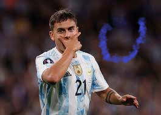

SuperBlog
tu blog de confianza
Prueba de Git
vamos a ver si se usar git
estamos en la rama master de git y cambiamos desde la rama cabecera :)

parrafo mas
rama footer
vamos a ver si se usar git
estamos en la rama master de git y cambiamos desde la rama cabecera :)
parrafo mas
rama footer